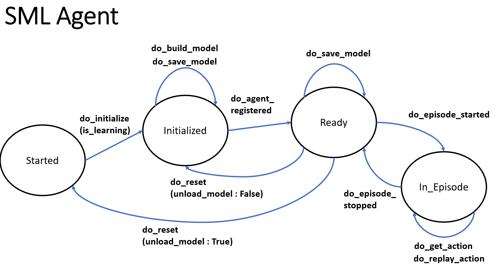

Guide
Agent Interface
A MISTK agent implements the mistk.agent.AbstractAgent class. This class provides a set of abstract methods that represent the agent lifecycle and must be implemented by the new agent. Ultimately, these methods form the core of the web endpoint service that is made available for every agent implementation.
- do_initialize (props: dict, hparams: dict)
Called once the endpoint service has launched. This would typically be the first call made to the service. Perform any general setup and initialization.
- param props:
A dictionary of settings or configuration values that are passed from the ecosystem, but are not considered model hyperparameters.
- param hparams:
A dictionary of hyperparameters that are used by the agent model.
- do_build_model (path: str = ‘’)
Instructs the service to build all necessary data structures given the selected initialized properties and hyperparameters.
- param path:
The path to the model file or checkpoint that should be loaded, if you’re using a pretrained one Defaults to an empty String if no file was specified in this agent’s definition.
- do_save_model (path: str = ‘’)
Save a checkpoint of the model to the supplied data path. Format of the saved file(s) is at the discretion of the agent. The infrastructure associates this model checkpoint with this agent.
- param path:
The path to which the model should be saved.
- do_agent_registered (agent_cfg: dict)
Instructs the service that the agent has been registered to a orchestrator
- param agent_cfg:
A dictionary for the agent configuration from the orchestrator
- do_episode_started (episode_cfg: dict):
Instructs the agent that the episode has started. This method must also include a way to reset the agent’s learner with the current observations, if the learner has this expectation.
- param episode_cfg:
Dict with the episode’s config settings. A key must be obs, with a List of the env’s initial observation.
- do_get_action (obs: Dict[str, List[Union[int, float]]]) -> Dict[str, List[Union[int, float]]]:
Gives the agent the observations to perform action(s)
In normal operating conditions, this Agent class is only controlling one player/entity in your game/environment. In this situation, we assume both the input obs and output will be a dictionary containing that singular agent, whose name is self.agent_name, as defined in do_start_episode.
However, if this Agent class is controlling multiple players/entities for some reason, the input & output of this method would be a dict with each of those players/entities represented.
- param obs:
A dictionary of each agent’s list of int or float observations. The keys of the dict are each agent’s name.
- return:
A dict of lists. Each list contains the int/float actions an agent should take.
do_replay_action (obs: Dict[str, Union[List[Union[int, float]], bool]]):
Reviews action that the agent taken against the env observations so the agent can learn.
- param obs:
In general, this will be a dictionary of: prev_obs: A list of env observations prior to taking this step, rewards: A list of rewards for this agent on this turn, actions: A list of actions this agent took, new_obs: A list of env observations after taking this step done: Boolean if the game is over
- do_episode_stopped ():
Instructs the agent that the episode has stopped
- do_reset (unload_model: bool = True):
Resets the model into its initial state
- param unload_model:
Unload (reset) the built model or keep the current built model
The Agent State Machine
Model implementations follow a workflow lifecycle based on state machine transitions. The underlying MISTK infrastructure ensures that only legal transitions from one state to another can be made and that the appropriate model methods are called during those transitions. The image below illustrates the high-level state machine transitions and the model methods that may be called between them.
The ‘Terminated’ state (and associated method ‘do_terminate’) is not pictured but is a valid transition from any of the states depicted above. Note that an internal ‘Failed’ state will be entered if the agent implementation throws an exception. No further model activities are permitted from the ‘Failed’ state.
If a workflow enters the ‘Failed’ state, then the workflow will need to be restarted from the beginning. This is required in order to support various technologies that may not have a methodology to reset/resume their state after a critical failure.
Initializing an Agent
Initialization of an agent loads the hyperparameters and model properties associated with the agent. Hyperparameters are defined by the algorithm that an agent is based on. Agent properties are defined by a specific implementation. Below are sample hyperparameters and model properties dictionaries that can be passed to an agents implementation’s ‘do_initialize’ method.
Hyperparameters
{
"low": 0,
"high": 4,
"size": 1
}
Model Properties
{
"model_file_name": "test.pt"
}
Please note, that when using the RESTful API directly, where the user would be submitting the JSON via the ‘load_data’ API call, the JSON keys would need to be in camelcase format rather than underscored (ie. object_info becomes objectInfo).
Agent Status
Agent implementations are encouraged to report status pertaining to their current workflow state back to the MISTK infrastructure by calling the update_status(dict) method inherited from AbstractAgent (note this method is intended to be called by the agent, not overridden as the methods above). This method takes a dictionary object of key-value pairs defined by the agent. For example, the agent below updates its status with each step within a running episode.
Example Agent
The following example code implements a test random agent with the MISTK agent interface:
1##############################################################################
2#
3# This program is free software: you can redistribute it and/or modify
4# it under the terms of the GNU General Public License as published by
5# the Free Software Foundation, either version 3 of the License, or
6# (at your option) any later version.
7#
8# This program is distributed in the hope that it will be useful,
9# but WITHOUT ANY WARRANTY; without even the implied warranty of
10# MERCHANTABILITY or FITNESS FOR A PARTICULAR PURPOSE. See the
11# GNU General Public License for more details.
12#
13# You should have received a copy of the GNU General Public License
14# along with this program. If not, see <https://www.gnu.org/licenses/>.
15#
16##############################################################################
17
18import os
19import sys
20import numpy as np
21from typing import Dict, List, Union
22
23# To import any learners in this directory
24sys.path.append(os.path.dirname(os.path.realpath(__file__)))
25
26from mistk.agent.abstract_agent import AbstractAgent
27import mistk.log
28logger = mistk.log.get_logger()
29
30class TestAgent (AbstractAgent):
31 """ Agent that produces random integers
32 """
33 def __init__(self):
34 AbstractAgent.__init__(self)
35 self._props = None
36 self._model_file_name = 'test-agent.mdl'
37 self._training_data = None
38 self._testing_data = None
39 self._predictions = None
40 self._generations = []
41 self._stream_props = None
42
43 logger.info("Agent started")
44
45 def do_initialize(self, props : dict, hparams : dict):
46 """ Initializes the Random Learner
47
48 Learner Args (put these in hparams):
49 'low': Set this to the lowest int that can be returned
50 'high': Set this to the highest int that will not be returned.
51 In other words if this is 2, we may return 1, but never 2.
52 'size': How many ints should be returned.
53
54 Args:
55 props (dict): Not used.
56 hparams (dict): Parameters for the learner. Args defined above.
57 """
58 self._props = props or {}
59 self._hparams = hparams or {}
60 logger.info(f"do_initialize called for the Test Agent with: {self._props}")
61
62 def do_build_model(self, path: str = ''):
63 logger.info("do_build_model called")
64
65 def do_save_model(self, path):
66 if path:
67 logger.info("we cannot save a Random Learner")
68
69 def do_agent_registered(self, agent_cfg: dict):
70 logger.info("do_agent_registered called")
71 logger.info(f"agent config: {agent_cfg}")
72
73 def do_episode_started(self, episode_cfg: dict):
74 logger.info("do_episode_started called")
75 # If the learner must be reset with the current obs, it needs to happen
76 # here. The current obs will be in `episode_cfg['obs']`
77 logger.info(f"episode config: {episode_cfg}")
78 pass
79
80 def do_get_action(self, obs: Dict[str, List[Union[int, float]]]) -> Dict[str, List[int]]:
81 logger.info(f"do_get_action for a Random Learner called with obs={obs}")
82 rng = np.random.default_rng()
83 rng_ints = rng.integers(low=self._hparams['low'],
84 high=self._hparams['high'],
85 size=self._hparams['size'])
86 action = {self.agent_name: [int(x) for x in rng_ints]}
87 logger.info(f"The random learner will return: {action}")
88 return action
89
90 def do_replay_action(self, obs: Dict[str, Union[List[Union[int, float]], bool]]):
91 logger.info("do_replay_action called")
92 logger.info(f"observations: {obs}")
93
94 def do_episode_stopped(self):
95 logger.info("do_episode_stopped called")
96
97 def do_pause(self):
98 logger.info("do_pause called")
99
100 def do_terminate(self):
101 pass
102
103 def do_reset(self, unload_model):
104 logger.info("do_reset called")
105 logger.info(f"unload_model: {unload_model}")
106 pass
Orchestrator Interface
The MISTK orchestrator interfaces with the actual game environment (e.g. Gynasium, Unity, Airlift Challenge). An orchestrator implements the mistk.agent.AbstractOrchestrator class. This class provides a set of abstract methods that represent the orchestrator lifecycle and must be implemented by the new orchestrator. Ultimately, these methods form the core of the web endpoint service that is made available for every orchestrator implementation.
- do_initialize (env: dict = {}, agents_needed: int = 1):
Called once the endpoint service has launched. This would typically be the first call made to the service.
- param env:
Dictionary which has keyword args that will be used for the env’s initialization method [Default = None]
- param agents_needed:
Number of agents who’ll play in this game. [Default = 1]
- do_register_agent (agent_name: str, agent_url: str, skip_train: bool):
Instructs the service to register all of the agents this orchestrator will work with.
- param agent_name:
The name of the agent
- param agent_url:
The URL to the agent
- param skip_train:
If we shouldn’t train this agent [Default = False]
- do_start_episode (episode_cfg: dict):
Begins starting the episode of playing the game
- param episode_cfg:
Dictionary with the episode’s config settings
- do_save_episode (path: str):
Saves the game episode’s state and/or output
- param path:
The path to save the game to
- **do_stop_episode**():
Stops all processing and releases any resources that are in use in preparation for being shut down.
- **do_reset**():
Resets the model into its initial state
The Orchestrator State Machine
Orchestrator implementations follow a workflow lifecycle based on state machine transitions. The underlying MISTK infrastructure ensures that only legal transitions from one state to another can be made and that the appropriate Orchestrator methods are called during those transitions. The image below illustrates the high-level state machine transitions and the orchestrator methods that may be called between them.
A Orchestrator instance will automatically go to the Uninitialized state if its container instance successfully starts up. Once initialized, agents can be registered. Once the defined amount of agents are registered, then the state will switch to ready where then a game episode can be started.
Example Orchestrator
The following example code implements a simple test orchestrator with the MISTK orchestrator interface:
1##############################################################################
2#
3# This program is free software: you can redistribute it and/or modify
4# it under the terms of the GNU General Public License as published by
5# the Free Software Foundation, either version 3 of the License, or
6# (at your option) any later version.
7#
8# This program is distributed in the hope that it will be useful,
9# but WITHOUT ANY WARRANTY; without even the implied warranty of
10# MERCHANTABILITY or FITNESS FOR A PARTICULAR PURPOSE. See the
11# GNU General Public License for more details.
12#
13# You should have received a copy of the GNU General Public License
14# along with this program. If not, see <https://www.gnu.org/licenses/>.
15#
16##############################################################################
17
18from mistk.orchestrator.abstract_orchestrator import AbstractOrchestrator
19from mistk.watch.wait import wait_for_state
20import mistk.log
21logger = mistk.log.get_logger()
22
23class TestOrchestrator (AbstractOrchestrator):
24 def __init__(self):
25 AbstractOrchestrator.__init__(self)
26 self._props = None
27 self._orchestrator_file_name = 'test-orchestrator.mdl'
28 self._agents_needed = NotImplemented
29 self._default_env = {}
30
31 self.step_num = 0
32
33 logger.info("Orchestrator started")
34
35 def do_initialize(self, env: dict = {}, agents_needed: int = 1):
36 """ This initializes Airlift Orchestrator
37
38 Args:
39 env (dict, optional): Dictionary which has keyword args that will
40 be used for the env's initialization method [Default = None]
41 agents_needed (int, optional): Number of agents who'll play in
42 this game. [Default = 1]
43 """
44 env_dict = env if env else self._default_env
45 self._agents_needed = int(agents_needed)
46
47 logger.info("do_initialize called")
48 logger.info(f"Initializing the Test Orchestrator with: {env_dict}")
49
50 # TODO: Call Initialize Method to Environment
51 # TODO: Call Reset Method to Environment
52
53 def do_register_agent(self, agent_name: str, agent_url: str,
54 skip_train: bool = None):
55 """
56 Instructs the service to register all of the agents this orchestrator
57 will work with.
58
59 :param agent_name: The name of the agent
60 :param agent_url: The agent URL
61 :param skip_train: If we shouldn't train this agent [Default = False]
62 """
63 pass
64
65 def do_start_episode(self, episode_cfg: dict):
66 """
67 Begins starting the episode of playing the game
68
69 :param episode_cfg: Dictionary with the episode's config settings
70 """
71 logger.info("Starting episode")
72 for agent in self._agents: # Tells each agent to start an episode
73 try:
74 episode_cfg['obs'] = {agent: [0]}
75 self._agents[agent].episode_started(episode_cfg=episode_cfg)
76 wait_for_state(self._agents[agent], 'episode_started', 'in_episode')
77 except Exception as ex: #pylint: disable=broad-except
78 logger.exception("Unable to start episode for Agent {agent} in do_start_episode")
79 self.fail(str(ex))
80
81 # Loop between each step to play the game
82 for step_num in range(self._steps):
83 self.step_num = step_num
84 logger.info(f"Running step number {self.step_num}")
85 self.update_status({"step": self.step_num})
86
87 # Gets each agent's desired actions based on current observations
88 # TODO: Convert actions to an array of float types
89 for agent in self._agents:
90 agent_obs = {agent: self.obs[agent]}
91 try:
92 logger.debug(f"[{step_num}] Getting actions for {agent} with obs {agent_obs}")
93 action = self._agents[agent].get_action(obs=agent_obs)
94 logger.info(f"[{step_num}] Got actions for {agent}: {action}")
95 except Exception as ex: #pylint: disable=broad-except
96 logger.exception("Unable to get actions from Agent {agent} in do_start_episode")
97 self.fail(str(ex))
98 wait_for_state(self._agents[agent], 'get_action', 'in_episode')
99 self.actions[agent] = action[agent]
100
101 # TODO: Need to add step method to the Environment
102 # TODO: And with that, deal with obs/rewards
103
104 # Trains each agent from the outcome of the current step
105 for agent in self._agents:
106 if self._skip_train[agent]:
107 logger.info(f"[{step_num}] Skip replaying {agent}")
108 else:
109 logger.info(f"[{step_num}] Replaying actions for {agent} with actions {self.actions[agent]}")
110 try:
111 step_data = {'prev_obs': self.obs[agent],
112 'rewards': self.rewards[agent],
113 'actions': self.actions[agent],
114 'new_obs': self.obs[agent]}
115 except Exception as ex: #pylint: disable=broad-except
116 logger.exception("Unable to get data to replay action for Agent {agent} in do_start_episode")
117 self.fail(str(ex))
118 try:
119 self._agents[agent].replay_action(obs=step_data)
120 wait_for_state(self._agents[agent], 'replay_action',
121 'in_episode')
122 except Exception as ex: #pylint: disable=broad-except
123 logger.exception("Unable to replay action for Agent {agent} in do_start_episode")
124 self.fail(str(ex))
125
126 def do_get_status(self):
127 """
128 Gets the status of the currently running orchestrator
129 """
130 pass
131
132 def do_stop_episode(self):
133 """
134 Stops all processing and releases any resources that are in use in
135 preparation for being shut down.
136 """
137 pass
138
139 def do_reset(self):
140 # TODO: Call reset method on environment
141 pass
Orchestrator and Agent Workflow
The following sequence diagram shows the interactions between the Test Harness (SML), the orchestrator, and a single agent for a single episode of play. A larger version of the image can be viewed by clicking the image.
{kind=link}